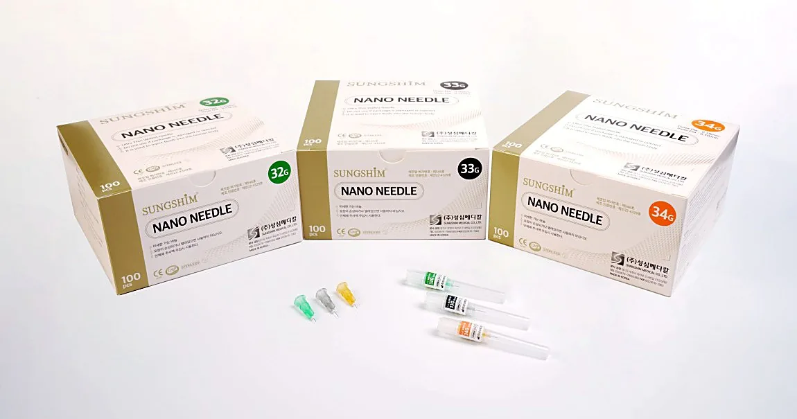

Sungshim Nano Needles (30G–34G, Micro-Polished)
Nano needles are disposable sterile needles used to inject medicines into the human body or aspirate bodily fluids. Finished with Sungshim's micro-polishing technology to relieve injection pain, they are intended for one-time use and help maintain hygiene and reduce the risk of contamination in clinical environments.
Engineered for consistent performance, these needles are suitable for both luer slip and luer lock syringes and support safe and controlled medical procedures.

Select an available gauge and length, then inspect the needle point through the magnified view.
↔ Swipe the diagram to see it in full
Relative visual only; the magnified bevel and shaft dimensions are not drawn to physical scale.
- Micro-polishing technology to relieve pain
- EO gas sterilization
- Suitable for both luer slip syringes and luer lock syringes
- Color coded hub for easy identification
- Made in Korea
Every gauge listed below is finished with Sungshim's micro-polishing technology, which smooths the needle point to relieve injection pain.
| Size | Length | Inner Box | Carton Box |
|---|---|---|---|
| 30G | 5/32″ (4 mm), 1/2″ (13 mm), 1″ (25 mm), 1 1/2″ (38 mm) | 100 pcs | 800 pcs |
| 31G | 5/32″ (4 mm), 15/64″ (6 mm), 5/16″ (8 mm), 1/2″ (13 mm) | ||
| 32G | 5/32″ (4 mm), 15/64″ (6 mm), 5/16″ (8 mm), 1/2″ (13 mm) | ||
| 33G | 5/32″ (4 mm), 15/64″ (6 mm), 5/16″ (8 mm), 1/2″ (13 mm) | ||
| 34G | 5/32″ (4 mm), 15/64″ (6 mm), 5/16″ (8 mm), 1/2″ (13 mm) |
For other sizes, please contact us.
-
Preparation
- Make sure the package and contents are intact and check the expiration date before use.
- Turn the cap to open the product.
-
Usage Procedure
- Seat the needle firmly onto the syringe, or other male fitting, with a push and a clockwise twist.
- Carefully remove the needle cover straight off the needle to avoid damaging the needle point.
- Be careful when removing and disposing of the needle, to prevent accidental needle-stick injury and passing infection.
- Do not put the needle cover back on the needle.
- Use once and discard immediately in accordance with local safety standards.
- This product is intended for single use only, do not reuse.
- Dispose of used needles in a sealed, puncture-resistant container and follow proper disposal regulations to eliminate risk of infection.
Warnings
- Users should be fully aware of the instructions for use and cautions, and cope with the latent danger involved in use.
- Use immediately after opening the unit package. After use, dispose of properly and safely to eliminate risk of infection.
Precautions
- For single use only. Do not reuse.
- Do not use if the package or product has been damaged or contaminated.
- Do not use if the expiration date has passed.
- Do not use if the needle looks damaged or bent.
- Do not touch the needle or let it touch any surfaces.
- Do not store at extreme temperature and humidity. Avoid direct sunlight.
- Keep away from getting wet.
This product is a needle used to inject medicines into the human body or aspirate bodily fluids.
- Shelf Life: 5 years from the date of manufacture
- Packaging: Individual sterile packaging by listed size variant
- Storage Conditions: Store at room temperature; avoid exposure to direct sunlight, heat, and humidity
Note: This is a medical device. Please read all instructions and safety guidelines carefully before use.